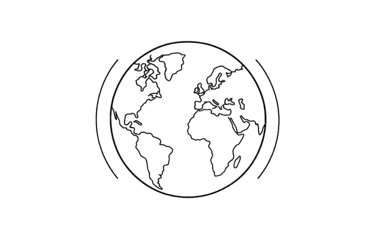

| TOP | BOTTOM |
|---|---|
| 1. Norway | 1. Mali |
| 2. Australia | 2. Burkina Faso |
| 3. New Zealand | 3. Liberia |
| 4. USA | 4. Chad |
| 5. Ireland | 5. Guinea-Bissau |
| 6. Liechtenstein | 6. Mozambique |
| 7. Netherlands | 7. Burundi |
| 8. Canada | 8. Niger |
| 9. Sweden | 9. Congo |
| 10. Germany | 10. Mozambique |
Global South countries are generally recipients of aid or debts and are considered victims of “violent economic cures” of international organizations like the International Monetary Fund (IMF). The growth of TNCs from the global North in developing countries also leads to domination of the global market and exploitation of cheap labour.
The report also emphasized that the prosperity of the North is dependent on the development of the South.
Top Ten and Bottom Ten Countries in Terms of HDI Rankings
The concept of "North-South divide" explains that the "global North" is where industrial development is concentrated while the "global South" is where poverty and disadvantage exist. Structural inequalities between the industrialized North and the low-wage, low-investment rural South are linked to aid, developing world debt, and the practices of TNCs.
